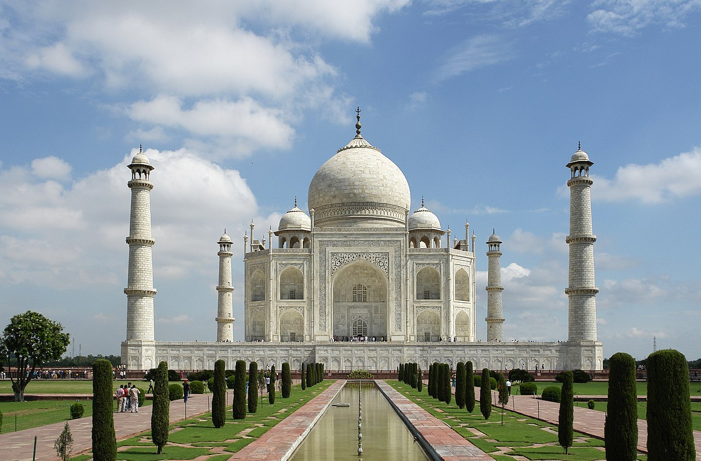

Taj Mahal

Taj Mahal is an ivory-white marble mausoleum on the south bank of the Yamuna river in the Indian city of Agra. It was commissioned in 1632 by the Mughal emperor, Shah Jahan (reigned from 1628 to 1658), to house the tomb of his favourite wife, Mumtaz Mahal. The tomb is the centrepiece of a 17-hectare (42-acre)[5] complex, which includes a mosque and a guest house, and is set in formal gardens bounded on three sides by a crenellated wall.
Construction of the mausoleum was essentially completed in 1643 but work continued on other phases of the project for another 10 years. The Taj Mahal complex is believed to have been completed in its entirety in 1653 at a cost estimated at the time to be around 32 million rupees, which in 2015 would be approximately 52.8 billion rupees (U.S. $827 million). The construction project employed some 20,000 artisans under the guidance of a board of architects led by the court architect to the emperor, Ustad Ahmad Lahauri.
The Taj Mahal was designated as a UNESCO World Heritage Site in 1983 for being "the jewel of Muslim art in India and one of the universally admired masterpieces of the world's heritage". It is regarded by many as the best example of Mughal architecture and a symbol of India's rich history. The Taj Mahal attracts 7–8 million visitors a year. In 2007, it was declared a winner of the New7Wonders of the World (2000–2007) initiative.
The Taj Mahal was commissioned by Shah Jahan in 1631, to be built in the memory of his wife Mumtaz Mahal, a Persian princess who died giving birth to their 14th child, Gauhara Begum.[6] Construction of the Taj Mahal began in 1632.[7] The imperial court documenting Shah Jahan's grief after the death of Mumtaz Mahal illustrate the love story held as the inspiration for Taj Mahal.[8][9] The principal mausoleum was completed in 1643 and the surrounding buildings and garden were finished about five years later.
The Taj Mahal incorporates and expands on design traditions of Persian and earlier Mughal architecture. Specific inspiration came from successful Timurid and Mughal buildings including the Gur-e Amir (the tomb of Timur, progenitor of the Mughal dynasty, in Samarkand),[11] Humayun's Tomb, Itmad-Ud-Daulah's Tomb (sometimes called the Baby Taj), and Shah Jahan's own Jama Masjid in Delhi. While earlier Mughal buildings were primarily constructed of red sandstone, Shah Jahan promoted the use of white marble inlaid with semi-precious stones. Buildings under his patronage reached new levels of refinement.
The tomb is the central focus of the entire complex of the Taj Mahal. It is a large, white marble structure standing on a square plinth and consists of a symmetrical building with an iwan (an arch-shaped doorway) topped by a large dome and finial. Like most Mughal tombs, the basic elements are Persian in origin.[13]
The base structure is a large multi-chambered cube with chamfered corners forming an unequal eight-sided structure that is approximately 55 metres (180 ft) on each of the four long sides. Each side of the iwan is framed with a huge pishtaq or vaulted archway with two similarly shaped arched balconies stacked on either side. This motif of stacked pishtaqs is replicated on the chamfered corner areas, making the design completely symmetrical on all sides of the building. Four minarets frame the tomb, one at each corner of the plinth facing the chamfered corners. The main chamber houses the false sarcophagi of Mumtaz Mahal and Shah Jahan; the actual graves are at a lower level.
Back to